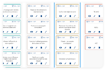

<div class=" ml-5 card">
  <div class="card-menu">
    <mat-menu #appMenu="matMenu">
      <button mat-menu-item>Renommer</button>
      <mat-divider></mat-divider>
      <button mat-menu-item>Dupliquée</button>

      <mat-divider></mat-divider>
      <button mat-menu-item>Supprimer</button>
    </mat-menu>

    <button class="icon-menu" mat-icon-button [matMenuTriggerFor]="appMenu">
      <i class="material-icons">more_vert</i>
    </button>
  </div>
  
  <div class="modele-descreption-container">
    <div class="modele-descreption">
      <mat-label class="modele-titre">{{ nomModele }}</mat-label>
      <p class="date-modification-modele">
        {{ dateDeModification | date }}
      </p>
    </div>
    <p class="modele-btn">Modèle</p>
  </div>
</div>
